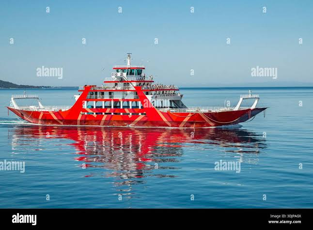

Wydra
Przeprawa promowa „Wydra” i łączy Brzeg Górny z Kępą Łąkową przez rzekę Mętną. Prom jest ręczny, ciągnięty po linie rozpiętej nad wodą, i płynie się nim około 6 minut. Mieści 12 osób i 2 rowery. Samochodów nie wozimy, motocykli też nie.
Pływamy od 1 maja do 30 września. Przy wysokiej wodzie prom stoi, a stan rzeki każdy może sam sprawdzić w serwisie hydrologicznym IMGW

Jak się przeprawić
- Zadzwonić dwa razy dzwonem na słupie przy kładce.
- Poczekać, aż przewoźnik podpłynie i przycumuje prom.
- Wejść na prom po trapie.
- Postawić rower przy burcie, trzymać go za kierownicę i usiąść na ławce.
- Zapłacić przewoźnikowi przed odbiciem od brzegu.
- Wysiąść na drugim brzegu na znak przewoźnika.
Na promie wolno
- wchodzić z psem bez smyczy,
- stać przy linie,
- skakać z promu do wody,
- wnosić szkła,
- płynąć dzieciom do lat 10 bez opieki dorosłego.
Słowniczek przeprawy
- Przewoźnik
- Osoba, która prowadzi prom i odpowiada za pasażerów.
- Trap
- Pomost między brzegiem a promem.
- Lina prowadząca
- Stalowa lina nad rzeką, po której prom przesuwa się z brzegu na brzeg.
- Cumowanie
- Przywiązanie promu do brzegu.
- Kępa
- Wyspa albo kawałek lądu, który przy wysokiej wodzie bywa zalewany.
Regulamin